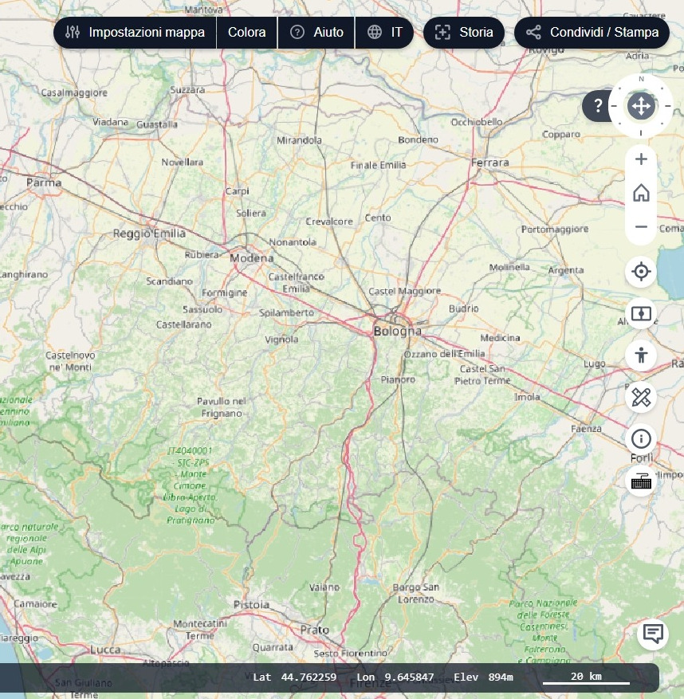
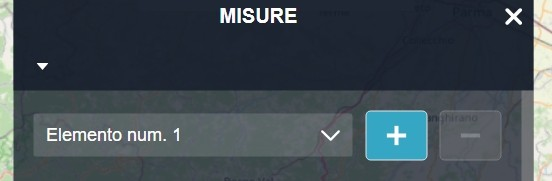
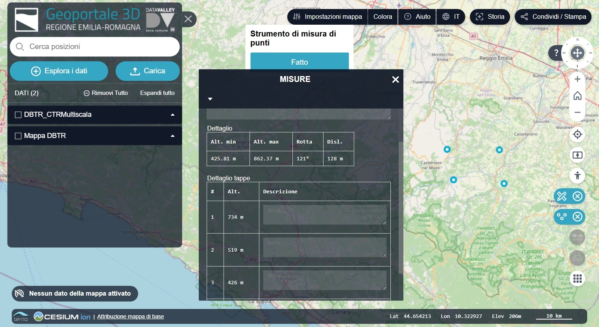
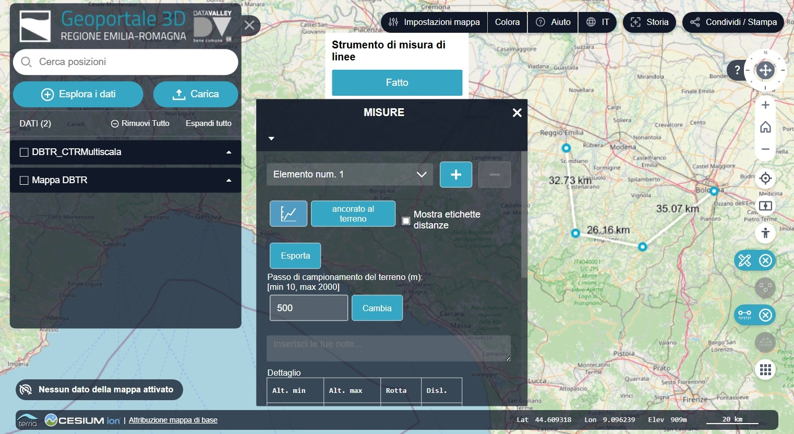
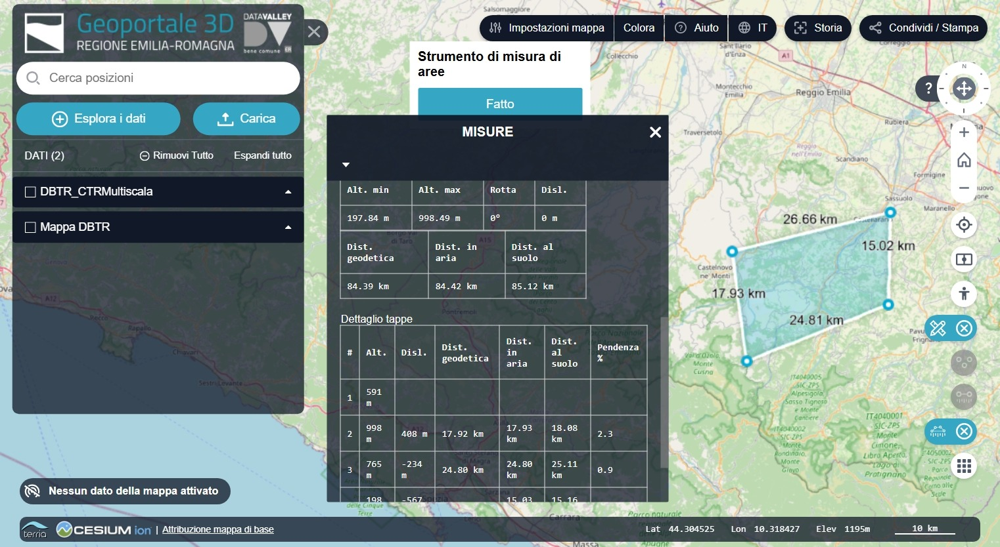
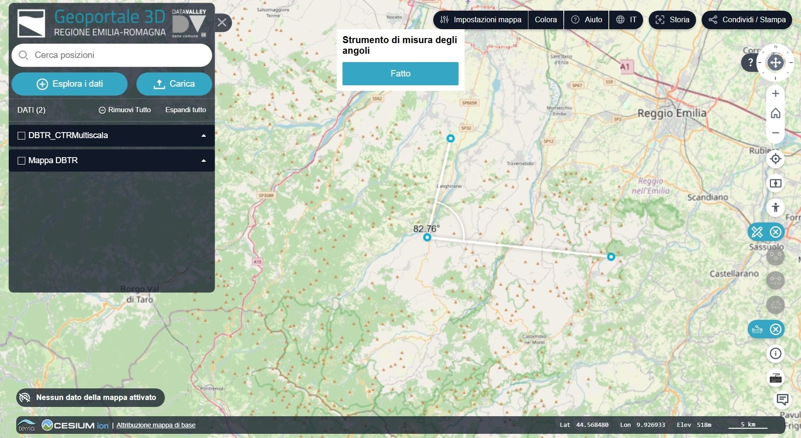
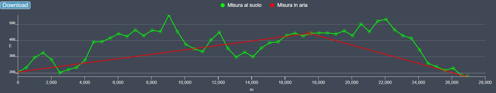
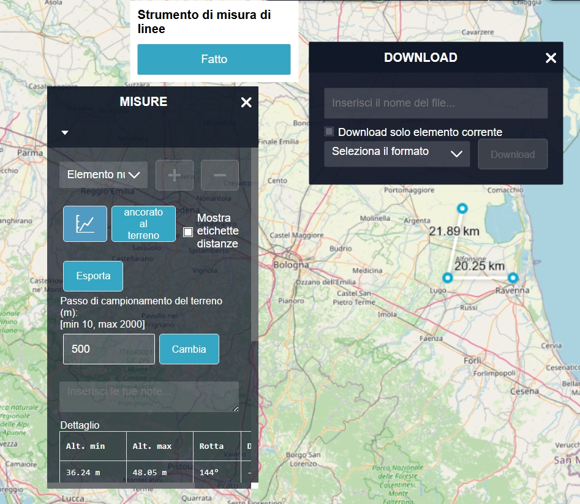
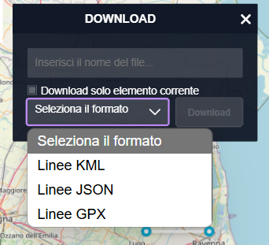
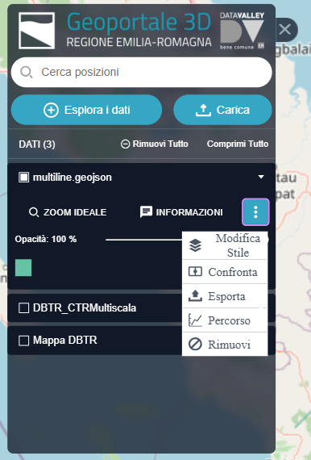

Misure e Percorsi
Misure sulla mappa
rer3d-map è dotato di una famiglia di strumenti di misura tramite cui è possibile misurare distanze, superfici, elevazione e angolazione tra diversi punti.
Gli strumenti di misura si attivano (o disattivano) cliccando sul bottone .

Una volta attivati gli strumenti di misura, cliccare sullo strumento specifico che si vuole utilizzare e successivamente cliccare sulla mappa per posizionare i vertici (o tappe). Man mano che si posizionano i vertici, avremo un comportamento specifico sulla base dello strumento selezionato.
Per ciascuno strumento rimane sempre possibile cambiare il livello di zoom o spostare la mappa tramite drag&drop (prendi e trascina) per posizionarsi in modo opportuno.
Di ogni vertice è possibile visualizzare informazioni dettagliate, come l'altitudine, la dislocazione, la distanza geodetica, la distanza al suolo e la pendenza.
E' possibile, inoltre avere più percorsi(o elementi) che vengono gestiti all'interno del pannello di misure di ciascun strumento tranne per il misuratore angolare essendo che l'angolo interessato viene visualizzato direttamente sulla mappa.

Cliccando su un vertice già posizionato, questo viene rimosso; se invece lo si prende e trascina (drag&drop) verrà cambiata la sua posizione.
Misuratore di punti
Se selezioniamo lo strumento di misura di punti (cliccando sull'icona ), cliccando sulla mappa, verranno aggiunti dei punti corrispondenti alla posizione del cursore al momento del click.
Una volta definiti i punti desiderati, dal pannello, possiamo visualizzarne l'altitudine e aggiungere a ciascuno di essi una descrizione per attribuirgli un significato (la descrizione di ciascun punto verrà inclusa nel file di esportazione).

Misuratore lineare
Se selezioniamo lo strumento di misura lineare (cliccando sull'icona  ), cliccando sulla mappa, verranno aggiunti dei punti corrispondenti alla posizione del cursore al momento del click. Una volta che abbiamo inserito almeno 2 punti sulla mappa verrà disegnata una linea e aggiunta la distanza per ogni coppia di punti.
), cliccando sulla mappa, verranno aggiunti dei punti corrispondenti alla posizione del cursore al momento del click. Una volta che abbiamo inserito almeno 2 punti sulla mappa verrà disegnata una linea e aggiunta la distanza per ogni coppia di punti.
Tramite questo strumento è possibile visualizzare sulla mappa le distanze tra ogni coppia di punti (funzionalità disattivabile), insieme ad altre informazioni accessibili direttamente dal pannello. All'interno di quest'ultimo è presente anche la gestione dei passi di campionamento, che consente di definire un livello di precisione variabile. Dopo aver modificato il valore, è necessario cliccare sul pulsante 'Cambia' per applicare le modifiche. Per analizzare più nel dettaglio le modifiche, è consigliabile aprire il grafico utilizzando l'apposito pulsante presente nel pannello.

Misuratore di area
Se selezioniamo lo strumento di misura di area (cliccando sull'icona ), cliccando sulla mappa, verranno aggiunti dei punti corrispondenti alla posizione del cursore al momento del click. Una volta che abbiamo inserito almeno 3 punti sulla mappa verrà disegnato il perimetro della figura chiusa con la sua area colorata, viene quindi definito un poligono.
Continuando a cliccare sulla mappa, si andranno ad aggiungere nuovi vertici al poligono.
Anche per questo strumento valgono le stesse considerazioni fatte per il misuratore lineare: la gestione dei passi di campionamento, il grafico e le distanze tra i vari punti vengono trattati come in un misuratore lineare applicato a un percorso chiuso.

Misuratore angolare
Se selezioniamo lo strumento di misura angolare (cliccando sull'icona ), cliccando sulla mappa, verranno aggiunti dei punti corrispondenti alla posizione del cursore al momento del click. Una volta che abbiamo inserito almeno 3 punti sulla mappa verrà disegnato l'angolo racchiuso tra i tre vertici e indicato il relativo valore.
A differenza degli altri, questo strumento funziona senza l’utilizzo del pannello delle misure, poiché l’angolo viene visualizzato direttamente sulla mappa. Si selezionano tre punti e viene calcolato l’angolo tra il primo e l’ultimo. Continuando a cliccare sulla mappa, l’ultimo punto selezionato viene sostituito da quello nuovo.

Percorsi
Dal momento in cui viene posizionato il secondo vertice, viene mostrata la linea congiungente e viene considerata, oltre che in funzione della misura, anche come percorso.
Possiamo distinguere due tipologie di percorsi: il percorso aperto, che corrisponde all’insieme di punti collegati tramite il misuratore lineare, e il percorso chiuso, definito dal misuratore di aree.
A sinistra della mappa si apre un pannello con i dati del percorso:
- Lunghezza 3D del percorso;
- Altitudine minima e massima;
- Rotta (angolo rispetto al Nord della linea passante per la prima e ultima tappa del percorso);
- Dislivello tra prima e ultima tappa;
- Dettaglio di ogni tappa (altitudine, dislivello rispetto alla tappa precedente, distanza dall'inizio del percorso).
I dati dei punti 1. e 2. devono essere calcolati esplicitamente cliccando sul pulsante Cambia, che applica il nuovo valore del passo di campionamento inserito nel pannello. Il percorso viene quindi campionato automaticamente a intervalli regolari e molto fitti, così da ricavarne altitudine e lunghezza non solo nei punti tappa. Di conseguenza, la distanza calcolata in questo modo risulta sempre maggiore o uguale rispetto a quella ottenuta utilizzando esclusivamente le tappe.
Grafici
Nel pannello dei percorsi è presente il bottone Grafico che mostra (o nasconde) il pannello dei grafici del percorso.
I grafici sono di due tipi e vengono sovrapposti: quello rosso rappresenta le tappe del percorso attuale, quello verde invece rappresenta il campionamento del percorso generato con un passo di campionamento di default oppure definito manualmente.

Per entrambi i grafici sulle ascisse abbiamo la distanza del punto dall'inizio del percorso e sulle ordinate abbiamo l'altitudine del punto.
Può capitare che il dato di dettaglio (quello verde) copra una maggior distanza rispetto a quello rosso, poichè più realisticamente considera l'andamento del terreno anche fra una tappa e l'altra (mentre quello rosso rappresenta solo le tappe in aria).
Il pannello dei grafici si aggiorna automaticamente quando sulla mappa viene modificata in qualche modo una tappa(spostata, rimossa).
Esportazione
Nel pannello dei grafici è presente il bottone Download grazie al quale è possibile scaricare uno screenshot del grafico. Nel pannello di misura invece, è presente il bottone Esporta tramite il quale è possibile esportare i dati e le informazioni del percorso(o multipercorso) corrente in GeoJSON, CSV o KML.

L'esportazione consiste nel salvare uno o più file del formato scelto tra quelli disponibili. Questi file potranno poi essere usati in qualsiasi software GIS (ad esempio QGIS) o essere reimportati in rer3d-map (vedi sotto).
L'esportazione in CSV salva un file con un nome definito dall'utente, con formato .csv con i dati delle tappe ed eventuali note. I percorsi esportati in CSV saranno caricati dai GIS come layer di punti.
L'esportazione in GeoJSON salva un file con un nome definito dall'utente, con formato .geojson con i dati delle tappe ed eventuali note. I percorsi esportati in GeoJSON saranno caricati dai GIS come layer di linee.
L'esportazione in KML salva un file con un nome definito dall'utente, con formato .kml con i dati delle tappe ed eventuali note. I percorsi esportati in KML saranno caricati dai GIS come layer di linee.

Importazione
È possibile, in certe condizioni, importare un file da un layer caricato in rer3d-map.
I dati supportati per l'importazioni sono i file di percorsi o multi percorsi che hanno un certo formato, al momento sono supportati i file: .kml, .geojson, .json, .gpx ed infine .csv.

Cliccando su Percorso dai dati dell'unica geometria del layer viene prodotto e caricato il percorso, di cui sono visibili i dati ed i grafici.
Se il percorso importato ha valori altitudine, sono usati quelli, altrimenti sono letti dal modello del terreno di rer3d-map.